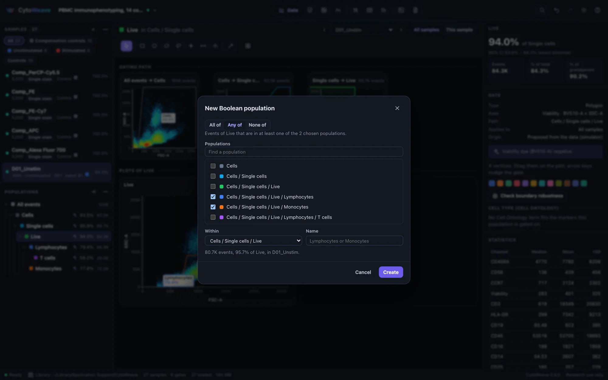
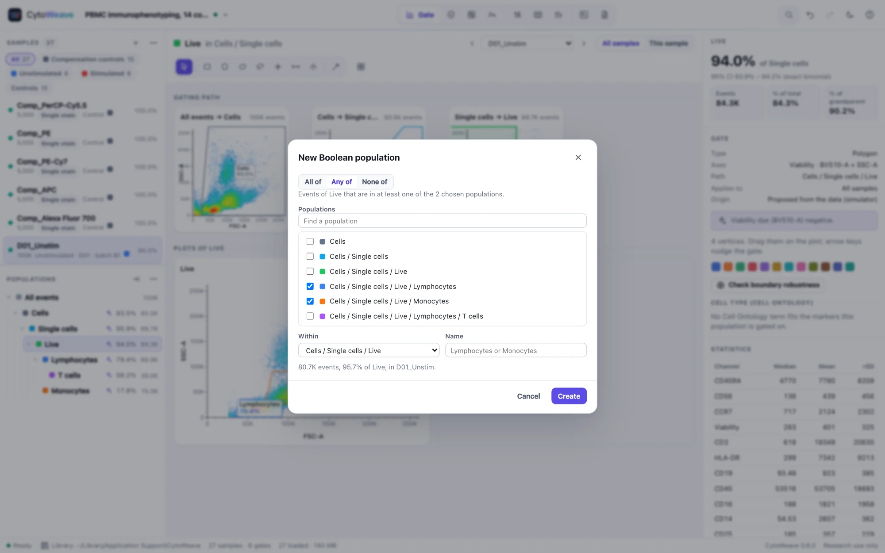

Gating
Draw gates once for the whole cohort, adjust them where a sample needs it, and check that every sample's result can be trusted.
The Gate view


Select a population in the tree on the left. The middle of the window then shows:
- Gating path: one plot per step from all events to the population, each showing the gate that leads to the next. Click a plot of the path to select that step.
- Plots of the population: the plots you have made of it. Add a plot adds one; then pick its axes.
Above them are the sample selector (↑ and ↓ step through samples, keeping the population and plots), the scope switch All samples / This sample, and the gate tools. The grid button sets the plot size, from small to extra large.
Plots
Click an axis title to choose its channel, by marker or detector name. The buttons at the top of a plot change its type and swap its axes:
- 2-D: pseudocolor, dot, density, contour and zebra.
- 1-D: histogram and cumulative. Choose Histogram (no y axis) from the y-axis menu to make one.
The ⋯ menu of a plot exports it as SVG or PNG or copies it to the clipboard, overlays other samples, edits the axis scales, adds the plot to a figure, sets the color map (classic, viridis, magma, turbo or blues) and dot size, and duplicates or removes the plot.
Axis scales
Edit axis scales… sets a channel's scale for every plot of the workspace, with a live histogram preview: logicle (the Moore and Parks reference implementation), arcsinh, log, linear, or FlowJo's biexponential, reproduced exactly from FlowJo's own algorithm. Estimate from data sets the parameters from the channel's values, such as the logicle width its negative events need. A gate stores the scale it was drawn on with its coordinates, as Gating-ML does, so it keeps its meaning when a plot's axes or scales change.
Drawing gates
| Key | Tool | How |
|---|---|---|
| V | Select and edit | Click a gate to select it; drag it or its vertices |
| R | Rectangle | Drag |
| P | Polygon | Click the vertices; double-click, press Enter or click the first vertex to close |
| E | Ellipse | Drag |
| L | Freehand | Draw around the population |
| Q | Quadrant | Click the center: four gates at once |
| H | Range | Drag across a histogram |
| S | Split | Click a histogram: two gates, below and above |
| W | Magic wand | Click a population on a 2-D plot to gate its density basin; on a histogram, splits at the valley |
A tool draws one gate and returns to Select. Hold ⇧ with its key, or double-click it, to keep it for several gates. New gates get a suggested name from what they select ("Singlets", "Live", "CD4+ CD8−"), which you can accept or type over.
To edit a gate, select it: drag it or its vertices on the plot, nudge it with the arrow keys (⇧ for larger steps), or type its exact coordinates in the inspector. F2 renames the population and ⌫ deletes the gate. Every edit can be undone.
Adjusting a gate for one sample
Gates are shared by every sample: draw them once and the whole cohort is gated alike. When one sample needs a different boundary:
- Show that sample, and switch the scope from All samples to This sample. The status bar says Editing this sample only.
- Move or reshape the gate. The change is an override for this sample: the shared gate stays as it was for everyone else, and the population tree flags the population as adjusted for this sample.
- Switch back to All samples before editing gates for the cohort again.
To return a sample to the shared gate, right-click the population and choose Use the shared gate for this sample. Applies to limits a gate to one sample group, for example a gate drawn only for the stimulated samples.
The population menu
Right-click a population in the tree (or use its ⋯ menu) for:
- Rename, Color, and Backgate on ancestors (B): the population's events highlighted on every plot of its gating path.
- Review across samples… and Adapt to each sample… (below).
- Copy to another population…: the gate, and its children, under another parent.
- Applies to: all samples or one group.
- New Boolean population… (below).
- Export events as FCS… (raw values and the original keywords) or as CSV….
- Add statistics to a table, and the cell-cycle and proliferation models.
Overlay other samples… in a plot's menu draws other samples, such as an FMO control, on top of the current one.
Boolean populations


A Boolean population holds the events in all of, any of or none of the populations you choose, such as cytokine-positive cells that are positive for IFN-γ or TNF, or live cells that are none of the lineage populations.
- Right-click a population and choose New Boolean population….
- Choose how to combine, and tick the populations. Find a population filters the list.
- Choose where it sits (Within) and its name, and watch the live count.
- Click Create. Edit Boolean population… changes it later.
Boolean populations behave like any other: they have plots, statistics and children, and they export to Gating-ML as Boolean gates.
Review across samples


A gate drawn on one sample can miss on another. Review across samples… computes the population on every sample and ranks them so the ones to look at come first:
- Frequency: a robust z-score of each sample's frequency against the cohort. Outliers are flagged.
- Boundary: whether the gate's boundary cuts through dense events in that sample, which makes its frequency fragile.
- Low counts, where the frequency is imprecise.
Click a sample to show it, then adjust the gate for it alone as above.
Boundary robustness
In the inspector, Check boundary robustness moves the selected gate's boundary in small steps and plots how the frequency follows, in points per 1% of the axis. A robust gate sits in a density valley; a moderate or sensitive one cuts through dense events, so where exactly it was drawn changes the answer. Move it into the valley, or report the uncertainty.
Adapting a gate to each sample


When the data shift between samples (another day, another voltage, a different staining), a shared gate can drift off its population. Adapt to each sample… moves it for you, sample by sample, and says how sure it is.
It learns from the samples the gate is known to be right on: where you drew it, adjusted it, or confirmed it. On every other sample it finds the density peaks of the parent population along the gate's axes, matches them to those of the most similar known samples, and carries the gate across, snapping a boundary that sat in a valley to the valley it lands in. Repeating this over several known samples, smoothings and halves of the events gives each sample a confidence. Each sample gets one of three statuses:
- Fits: the gate already fits, or does not cut into a population there. Nothing changes.
- Adjust: a confident adjustment, ticked. Apply applies the ticked ones in one undoable step, as adjustments for those samples.
- Review: uncertain, listed first with the reason (the peaks do not match, the carried-over gates disagree, or the boundary would cut through dense events). Click Show to adjust the gate on that sample by hand, or Looks right if it is right as it is, then adapt again: CytoWeave learns from every sample you check.
A gate is moved only where its boundary cuts into a population and the adaptation finds sparser events. Populations also move for biological reasons, and those moves are what you are measuring: a PMA stimulation down-regulates CD3 and CD4, and following them would gate the effect away. Two habits help:
- When each donor or subject has several samples that differ by a stimulation (unstimulated, peptide and PMA wells), set Keep one gate per to that metadata field. Each donor's samples are adapted together, on their pooled events, so they keep one gate between them, as an expert would gate them. A sample unlike the rest of its donor goes to review.
- Adapt a parent gate before its children. A sample under review for a parent stays under review for the gates below it.
Probabilities (CLR) exports each event's probability of belonging to the adapted gate, one file per sample, for tools that read classification results. The methods paragraph describes the adaptation and how many samples were adjusted or flagged. Polygons, rectangles, ellipses, ranges, splits and quadrants can be adapted. An AI agent can run it too (adapt_gate); its adjustments wait in its proposal for you.
How it was checked: on a simulated cohort with instrument shifts it made every shifted gate more accurate and none less; against an expert's own per-donor gates in a real cytokine study it left agreement with the expert unchanged, with no adjustment lowering it. Details are on the science page.